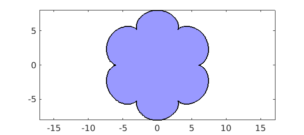
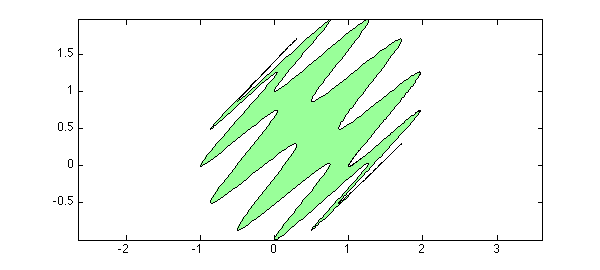
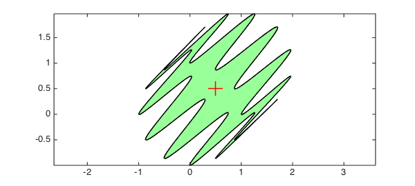

With Chebfun it is easy to compute with parametrized curves in the plane. For example, the following lines define a curve $(x,y)$ as a pair of chebfuns in the variable $t$:
t = chebfun('t',[0,2*pi]);
b = 1; m = 7; a = (m-1)*b;
x = (a+b)*cos(t) - b*cos((a+b)/b*t);
y = (a+b)*sin(t) - b*sin((a+b)/b*t);
Such curves are called epicycloids, named by the Danish astronomer Ole Romer in 1674. Epicycloids can be produced by tracing a point on a circle which rolls out on a larger circle. Romer discovered that cog-wheels with epicycloidal teeth turned with minimum friction. This is what our epicycloid looks like:
fill(x,y,[.6 .6 1]) axis equal

Note that although this curve is not smooth, the functions $x(t)$ and $y(t)$ that parameterize it are smooth, so Chebfun has no difficulty representing them by global polynomials:
x y
x =
chebfun column (1 smooth piece)
interval length endpoint values
[ 0, 6.3] 53 6 6
Epslevel = 2.578269e-15. Vscale = 7.386013e+00.
y =
chebfun column (1 smooth piece)
interval length endpoint values
[ 0, 6.3] 52 1.8e-15 -1.8e-15
Epslevel = 2.389926e-15. Vscale = 8.
With the following formula we can compute the area enclosed by the curve $(x,y)$:
format long A = sum(x.*diff(y))
A =
1.759291886010284e+02
Let's compare this result with the exact area of the epicycloid, given (for integer $m$) by the formula
exact = pi*b^2*(m^2+m)
exact =
1.759291886010284e+02
Here is a more complicated curve (now defined as a single complex-valued chebfun rather than a pair of real-valued chebfuns):
z = exp(1i*t) + (1+1i)*sin(6*t).^2; fill(real(z),imag(z),[.6 1 .6]) axis equal

Because this curve is a perturbed unit circle, with every perturbation occurring twice with opposite signs, the enclosed area should be equal to $\pi$, as is confirmed by Chebfun:
A = sum(real(z).*diff(imag(z))); [ A ; pi ]
ans = 3.141592653589794 3.141592653589793
We can compute and plot the centroid (or center of mass) of this region as follows:
c = sum(diff(z).*z.*conj(z))/(2i*A); hold on plot(c,'r+','markersize',20)

If you use scissors to produce a piece of paper in this shape, it should remain balanced when placed on a vertical needle centered at the red cross. (If it doesn't, it's likely your handicraft precision isn't as good as Chebfun's!)